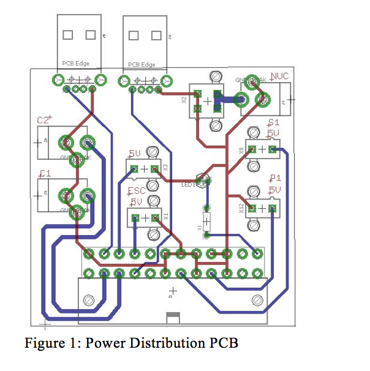
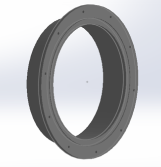

Power
Providing power to the AUV are four 14.8 V 10000mAh lithium ion batteries. Lithium ion batteries were chosen because of their reasonable cost, energy density, and size. 14.8 V was the selected voltage because it was the most commonly found voltage that was higher than the maximum required voltage for any of the electrical components.
Power Distribution
Two of the batteries are connected in parallel to an ATX voltage regulator which splits the voltage into a 12V rail to provide power to the NUC and the cameras and a 5V rail to provide power to other components. A custom printed circuit board is used to distribute power to thee components [Figure 1]. The ATX ensures a steady and consistent voltage supply. The eight thrusters are connected to the batteries via barrier block terminals. Although there is no ATX between the batteries that are connected to the thrusters there is instead a voltage regulator. The thrusters do not need specific rails as the other components do. Thus, a voltage regulator, which serves to prevent sudden voltage jumps and inconsistencies, is all that is necessary.
Preliminary calculations have shown that the AUV will have a minimum runtime of 25 minutes if all 8 thrusters are running at top speed. This is more than the expected run time of each vehicle listed in the competition manual of 15 minutes.

Control Systems
The AUV has two types of devices that need to be controlled, thrusters and servos. The BlueRobotics T200 thrusters and the various types of servos being used are both controlled using pulse width modulation (PWM). The thrusters use an AfroESC 30A (electronic speed controller) to control the speed of the thrusters using the PWM signal. To control all the devices of the AUV, 13 separate PWM generators are needed [Figure 2]. An Arduino Mega was chosen for three key reasons. It is easy to use. There is a vast open source library of code to work with. It has 15 PWM output pins. The servo code has been calibrated to not exceed the servo’s maximum rotation capabilities.
The Arduino Mega is used to receive the data from the pressure sensor as an analog input, convert it to a digital value and relay it back to the NUC using the serial interface.

Sensors
The AUV utilizes a Specialties US300 pressure sensor to measure the depth of the vehicle in the water. This year the team could implement the SS Aqua Cams that were purchased last year. The biggest challenged that was faced was getting the analog cameras to convert to a digital signal so that image processing could be used. This task was accomplished using an ION Video 2 PC Analog-To-Digital Video Converter.
AHRS
The AUV uses a VectorNav VN-100 [4] that was donated to us by VectorNav to gather information about the vehicle’s attitude and heading. The VN-100 is a high-performance Inertial Measurement Unit (IMU) and AHRS (attitude heading reference systems). It uses the latest solid-state Micro-Electro-Mechanical Systems (MEMS) sensor technology. It was selected because it includes a set of 3-axis gyroscopes, 3-axis accelerometers, 3-axis magnetometers, a barometric pressure sensor, and a 32-bit processor.
Component Placement
The components were arranged inside the hull to keep the center of gravity low and to minimize interference and noise with other electronic components. The interference is mainly a concern with the AHRS because it is such a sensitive piece of equipment.
Connectors
A combination of SubConn connectors and BlueRobotics cable penetrators were used to pass wires from outside the hull to the inside. Previously, the team had used all BlueRobotics cable penetrators because of their low cost. This year the SubConn connectors were added to reduce the number of holes that had to be drilled into the endcap.